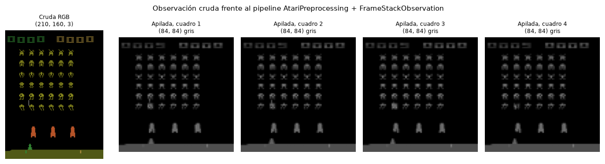

El Arcade Learning Environment (ALE) convierte los juegos originales del Atari 2600 en entornos de aprendizaje por refuerzo con una interfaz uniforme. El problema que resuelve es metodológico: antes de ALE cada investigador evaluaba su algoritmo en un dominio construido por él mismo, lo que introduce sesgo del diseñador —quien diseña el método diseña también la prueba— e impide comparar resultados entre artículos. ALE ofrece más de cien tareas diseñadas por terceros, programadores de videojuegos de los años ochenta sin ninguna intención de servir como benchmark de IA, todas con la misma interfaz: píxeles de entrada y una acción de joystick como salida. Eso permite plantear la pregunta de la inteligencia general de dominio, y es el banco de pruebas donde se validaron DQN, A3C, Rainbow y Agent57.
ALE no reimplementa los juegos: se construye sobre Stella, un emulador libre
del Atari 2600, y ejecuta los mismos ROMs comerciales con la misma lógica y los mismos errores
que el cartucho de 1980. Stella emula el hardware (CPU 6507, chip gráfico TIA, 128 bytes de RAM)
y produce la imagen de 210×160; ALE añade encima la capa que lo vuelve un entorno de RL: expone
una API de agente, elimina la interfaz humana —el entorno corre headless y mucho más
rápido que en tiempo real, lo que hace viable entrenar con millones de cuadros—, define dónde
termina un episodio (el cartucho original nunca termina, vuelve a la pantalla de inicio) y
define la recompensa, que el ROM no emite: lee la puntuación de una dirección conocida de la RAM
del juego y entrega la diferencia entre dos pasos consecutivos. Desde ale-py 0.9
los ROMs vienen incluidos en el paquete y ya no hace falta AutoROM.
Un mismo ROM da lugar a muchos entornos. Estos son los identificadores registrados para Space Invaders en la instalación de este laboratorio, con sus valores por defecto:
| Identificador | frameskip | repeat_action_probability | full_action_space |
|---|---|---|---|
| SpaceInvaders-v0 | (2, 5) | 0.25 | False |
| SpaceInvaders-v4 | (2, 5) | 0.0 | False |
| SpaceInvadersNoFrameskip-v0 | 1 | 0.25 | False |
| SpaceInvadersNoFrameskip-v4 | 1 | 0.0 | False |
| ALE/SpaceInvaders-v5 | 4 | 0.25 | False |
Los v0 y v4 son identificadores heredados de OpenAI Gym que se
conservan por compatibilidad; el namespace ALE/…-v5 es el actual y sus valores por
defecto implementan las recomendaciones de Machado et al. (2018). El frameskip indica
cuántos cuadros del emulador se ejecutan por cada acción; la tupla (2,5) de los ids
antiguos muestreaba ese número al azar, que era como Gym introducía estocasticidad. El
repeat_action_probability (sticky actions) hace que con probabilidad 0.25 el
entorno ignore la acción nueva y repita la anterior: como el 2600 es determinista, sin ruido un
agente puede «resolver» un juego memorizando una secuencia fija en lazo abierto sin mirar la
pantalla, y Machado et al. mostraron que una búsqueda trivial superaba así a agentes de RL
sofisticados. El full_action_space expone las 18 acciones legales del joystick en todos
los juegos en vez del conjunto mínimo de cada uno, que es lo que necesita un agente multijuego
con una sola cabeza de salida. Los antiguos sufijos -ram fueron retirados en
ale-py 0.12 y se sustituyen por el argumento obs_type.
El 2600 corre a 60 cuadros por segundo, y decidir 60 veces por segundo es un problema por
tres razones. Por velocidad: el costo dominante no es emular el juego sino la inferencia
de la red en cada decisión, así que con frameskip=4 el agente hace una cuarta parte
de las pasadas hacia adelante y la simulación se acelera de forma casi lineal en k. Por
asignación de crédito: un episodio de 1 800 cuadros pasa a 450 pasos, con menos descuento
acumulado y menos pasos por los que propagar la recompensa hacia atrás. Y por escala
temporal: un humano reacciona en torno a 200 ms, y k = 4 da 15 decisiones por segundo,
además de producir movimientos más sostenidos. También tiene costos: con k grande el
agente pierde control fino y puede no reaccionar a eventos rápidos, y cambiar k cambia el
horizonte efectivo que representa un mismo γ, de modo que dos configuraciones no son
directamente comparables.
Ligado a esto: el TIA dibuja varios sprites en cuadros alternos, y Space Invaders es un
caso de manual. Medición propia: ejecutando 1 200 cuadros con la acción NOOP, con
frameskip=1 los proyectiles aparecen en 346 observaciones, mientras que con el
frameskip=4 por defecto de la v5 no aparecen en ninguna: se dibujan justo en
los cuadros que el salto descarta. Esa es la razón de que el preprocesamiento estándar tome el
máximo píxel a píxel de los dos últimos cuadros en lugar del último, y tiene una
consecuencia práctica directa, descrita en la sección 3.
Arcade de Taito (1978) adaptado por Atari al 2600 en 1980. El jugador controla un cañón láser que solo puede moverse horizontalmente y disparar hacia arriba, frente a una formación de invasores que se desplaza lateralmente y desciende cada vez que toca un borde mientras deja caer proyectiles. El objetivo es destruir la formación antes de que llegue abajo. La dificultad la definen tres elementos: la formación acelera conforme quedan menos invasores, hay búnkeres destructibles que se erosionan también con los disparos propios, y una nave nodriza cruza por arriba otorgando una bonificación mayor. En ALE el jugador tiene 3 vidas y el episodio termina al agotarlas.
El juego solo incrementa un marcador en pantalla; ALE lo lee de la RAM y define la recompensa
como la diferencia de puntuación entre dos pasos consecutivos. De ahí tres consecuencias
de diseño. La recompensa es no negativa: perder una vida no penaliza, su costo es solo la
recompensa futura que se deja de obtener, y por eso al entrenar suele añadirse
terminal_on_life_loss. Es escalonada y dispersa: casi todos los pasos dan
cero, y los invasores de las filas superiores valen más. Y su escala es arbitraria y distinta
en cada juego, lo que motiva recortar la recompensa a su signo en el protocolo de DQN. El
retorno del episodio coincide exactamente con la puntuación final de la partida.
La observación por defecto de ALE/SpaceInvaders-v5 es
Box(0, 255, (210,160,3), uint8): la imagen RGB de la pantalla, 100 800 valores.
CartPole-v1, del laboratorio anterior, entrega Box((4,), float32) con
posición, velocidad, ángulo y velocidad angular: 4 valores. La diferencia de 25 200× en
dimensionalidad no es lo más importante. Lo verdaderamente distinto es que en CartPole el estado
ya viene interpretado —alguien decidió cuáles son las variables relevantes y las entrega
medidas—, mientras que en Atari el agente recibe lo mismo que un humano y debe descubrir por sí
mismo que ciertos grupos de píxeles son un cañón y otros el marcador irrelevante.
Las implicaciones son cinco. Hay que aprender la representación: con cuatro números basta una política lineal, y de hecho en el laboratorio anterior una regla escrita a mano resolvía CartPole; con 100 800 píxeles hace falta un extractor de características, y por eso aquí aparecen las redes convolucionales. Un solo cuadro no es un estado: una imagen fija no dice hacia dónde se mueve la formación ni si un proyectil sube o baja, de modo que la observación es parcialmente observable y viola la propiedad de Markov, que el vector de CartPole sí cumple. Sobra información: color, marcador, vidas y fondo no aportan a la decisión. Cambia la escala de memoria: un cuadro RGB ocupa unos 100 KB y un búfer de repetición de un millón de transiciones sin preprocesar pediría unos 100 GB. Y la eficiencia de muestras se desploma: miles de pasos en CPU frente a decenas de millones de cuadros y GPU.
Con obs_type="ram" la observación pasa a ser Box(0,255,(128,),uint8):
los 128 bytes completos de memoria de la consola, donde viven las posiciones de los sprites, la
puntuación y las vidas. Es literalmente el estado del juego. Conviene con recursos
limitados, porque 128 valores admiten un MLP que entrena en CPU; cuando lo que se estudia no es
la percepción sino la exploración o el control, porque la visión solo añade ruido y costo; y
porque el estado es completo y sin parpadeo, casi markoviano sin apilar cuadros, lo que además
lo hace útil para depurar. No conviene porque la codificación es específica de cada juego
y opaca —campos de bits y valores BCD—, así que no transfiere a otro juego, que es justo lo que
ALE existe para medir; porque es información privilegiada que un humano no ve, lo que invalida
la comparación con puntajes humanos; y porque no es comparable con la literatura, que reporta
resultados sobre píxeles.
El espacio de acción de Space Invaders es Discrete(6), el conjunto mínimo del
juego: NOOP (ni se mueve ni dispara, sirve para esperar o mantener posición),
FIRE (dispara sin moverse), RIGHT y LEFT (se desplaza sin
disparar) y RIGHTFIRE y LEFTFIRE (se desplaza y dispara en el
mismo paso). UP y DOWN existen en el joystick pero no hacen nada aquí.
Las acciones combinadas importan mucho, porque reflejan que en el 2600 el botón y la palanca son
independientes: un agente restringido a moverse o disparar jugaría claramente peor. Con
full_action_space=True el espacio pasa a Discrete(18).
AtariPreprocessing empaqueta el preprocesamiento estándar de DQN (Nature, 2015):
noop_max=30 ejecuta entre 1 y 30 NOOP al reiniciar para aleatorizar el estado
inicial; frame_skip=4 repite la acción cuatro cuadros y devuelve el máximo píxel a
píxel de los dos últimos, corrigiendo el parpadeo medido en 1.2 —exige frameskip=1
en el entorno base, o el salto efectivo sería de 16—; screen_size=84 redimensiona a
84×84; grayscale_obs=True elimina el color, que en Atari casi nunca es informativo;
y scale_obs=False mantiene uint8 en vez de float32, lo que
supone cuatro veces menos memoria en el búfer de repetición. Conviene precisar que el recorte
de recompensa, aunque forma parte del pipeline clásico de DQN, no está dentro de
AtariPreprocessing en Gymnasium: vive en ClipReward. Separarlos
tiene sentido, porque el recorte altera el objetivo que se optimiza mientras que las demás
transformaciones solo cambian la representación.
FrameStackObservation (llamado FrameStack antes de Gymnasium 1.0)
apila las últimas N observaciones en un nuevo eje. Su razón de ser es la ya señalada: un cuadro
no basta para determinar el estado, y con cuatro consecutivos la velocidad y la dirección quedan
implícitas en la diferencia entre ellos. Por eso ambos wrappers se usan siempre juntos: uno hace
cada cuadro barato y limpio, el otro le devuelve la dimensión temporal. El pipeline completo
lleva la observación de 100 800 a 7 056 y finalmente a 28 224 valores: es 3.6 veces más
pequeña que la imagen original y aun así contiene más información útil, porque incorpora cuatro
instantes en lugar de uno.

El módulo src/ale_utils.py concentra la infraestructura y se demuestra en el
notebook. crear_entorno crea el entorno y, si recibe video_folder, lo
envuelve en gymnasium.wrappers.RecordVideo con el episode_trigger
indicado; reenvía **kwargs a gym.make, así que sirve igual para Space
Invaders que para CartPole-v1 o para pedir obs_type="ram".
agente_aleatorio devuelve env.action_space.sample() como línea base.
ejecutar_episodio corre hasta que terminated o truncated
sean verdaderos, o hasta max_steps, y devuelve los pasos y el retorno acumulado.
generar_video_agente combina las anteriores: crea el entorno con grabación, juega
n_episodios, cierra el entorno y devuelve las rutas de los videos con las métricas
de cada episodio.
Tres decisiones de implementación merecen mención. El env.close() va dentro de un
finally, porque sin esa llamada el .mp4 se queda a medias y no llega a
escribirse a disco. La ruta de cada video se deriva del índice de episodio en vez de
listar la carpeta, de modo que las métricas no se desalinean cuando episode_trigger
graba solo algunos episodios ni se recogen videos de ejecuciones anteriores. Y
ejecutar_episodio siembra también env.action_space: reset(seed=…)
siembra el generador del entorno pero no el del espacio de acción, así que sin esa segunda
siembra el agente aleatorio jugaba una partida distinta en cada ejecución con la misma semilla.
Se añadió además agente_regla_simple, una política fija sin aprendizaje que
localiza el cañón y los invasores por su color en la imagen, descarta los invasores
cuya columna está tapada por un búnker —disparar ahí destruye la propia cobertura en lugar de
sumar puntos— y se desplaza hacia el invasor alcanzable más cercano disparando a la vez con
RIGHTFIRE o LEFTFIRE. La tolerancia de apuntado es de 4 px, media
anchura de un invasor (se midieron 8 px exactos). No esquiva los proyectiles enemigos, y no por
simplificar: como se midió en 1.2, con el frameskip=4 por defecto son invisibles
en la observación.
Se generaron dos videos de episodios completos en ALE/SpaceInvaders-v5, y se
comparó a los dos agentes sobre diez episodios con las mismas semillas:
| Agente | Video: pasos | Video: recompensa | Retorno medio (10 ep.) | Desv. típica | Pasos medios |
|---|---|---|---|---|---|
| agente_aleatorio | 298 | 35 | 123.5 | 73.3 | 461.0 |
| agente_regla_simple | 552 | 260 | 246.0 | 34.8 | 522.1 |
El agente de regla simple duplica el retorno del aleatorio con menos de la mitad de desviación típica y gana en las diez semillas, sin haber aprendido nada: solo mirando colores. Pero conviene decir lo incómodo: una política degenerada que se queda quieta disparando obtiene 285.0 de retorno medio, por encima de las dos. Buena parte del mérito no está en apuntar sino en no dejar de disparar nunca, porque la formación acaba pasando por encima del cañón de todos modos; y moverse tiene un costo real, porque con sticky actions el movimiento es impreciso y, sobre todo, es a ciegas. Ese último punto conecta las dos mitades del laboratorio: la medición de la sección 1.2 no es un detalle teórico, es exactamente lo que le impide a este agente esquivar. El preprocesamiento estándar de Atari no es burocracia: resuelve un problema que aquí se puede tocar con la mano.
Para un agente que sí aprenda, la infraestructura no cambia: basta apilar
AtariPreprocessing y FrameStackObservation sobre
crear_entorno, añadir el recorte de recompensa y sustituir la función de agente por
una red que estime Q(s,a).
Bellemare, M. G., Naddaf, Y., Veness, J. y Bowling, M. (2013). The Arcade Learning Environment: An Evaluation Platform for General Agents. JAIR, 47, 253–279. • Machado, M. C., Bellemare, M. G., Talvitie, E., Veness, J., Hausknecht, M. y Bowling, M. (2018). Revisiting the Arcade Learning Environment. JAIR, 61, 523–562. • Mnih, V. et al. (2015). Human-level control through deep reinforcement learning. Nature, 518, 529–533. • Documentación de Gymnasium (gymnasium.farama.org), de ale-py (ale.farama.org) y del emulador Stella (stella-emu.github.io).